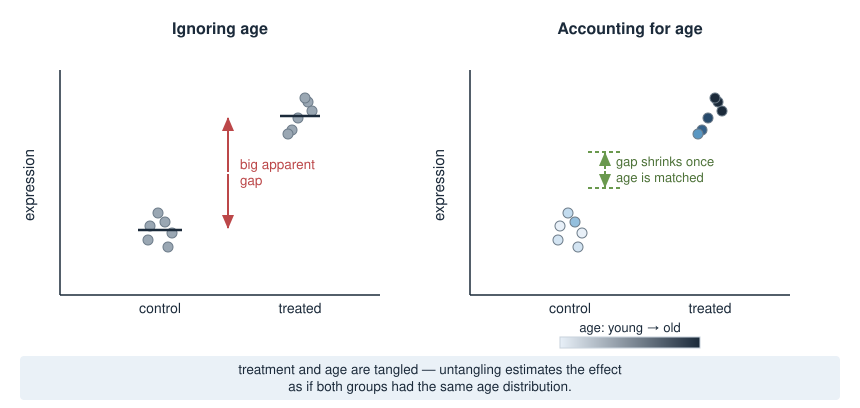
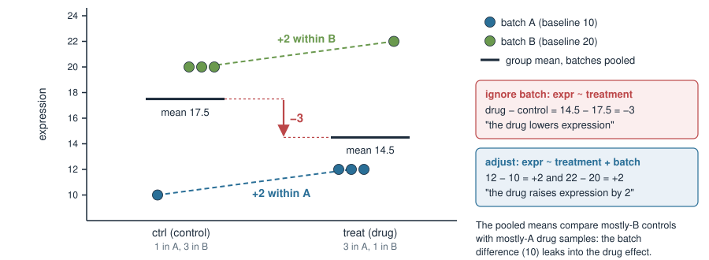
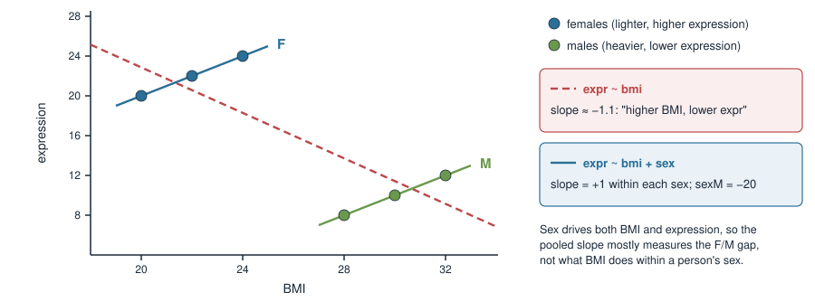
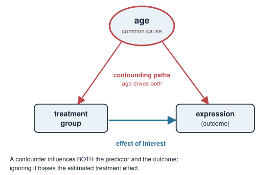
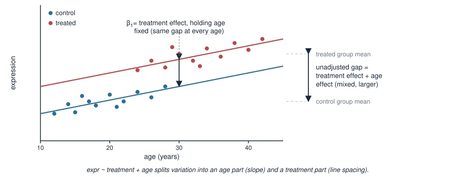
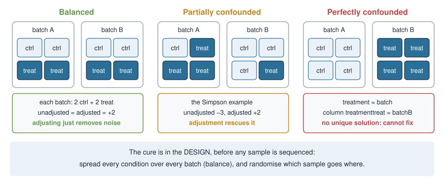
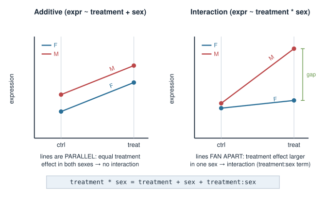
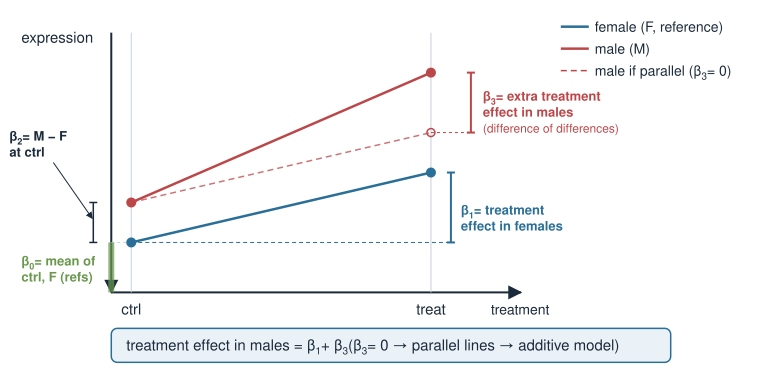
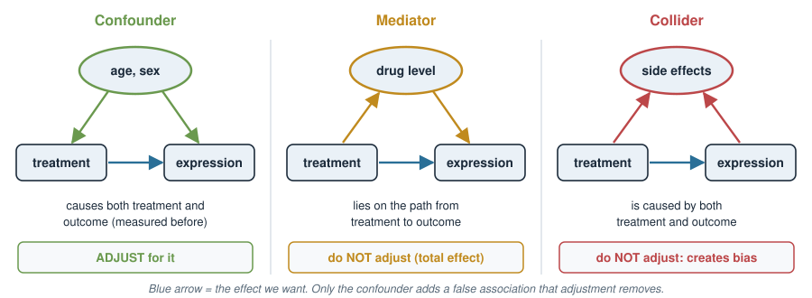
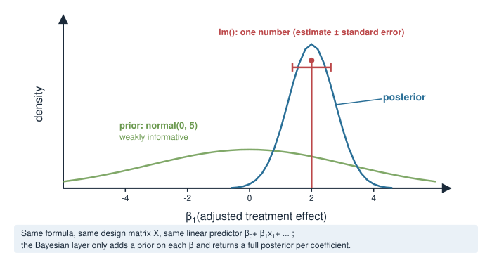

In Design matrices for covariates you learned how a formula becomes a design matrix \(X\), and that \(\boldsymbol\beta\) has no unique solution when two columns of \(X\) are identical. Today we ask which columns to put in, and what happens to the effect you care about when you leave one out.
Simpson’s paradox: a drug that lowers expression overall but raises it in every batch. Worked by hand.
Confounders, and what adjustment (“holding the others constant”) does.
Partial vs perfect confounding, and why the cure for the perfect case is the experimental design.
Covariates you will meet: age, sex, BMI, batch, time.
Interactions: when the effect itself differs between groups.
What not to adjust for: mediators, colliders, collinear pairs.
A biology picture first
You run an RNA-seq experiment: treated vs control mice, measuring one gene. Treated mice show higher expression. Success?
But the treated mice were, by accident, mostly old, and the controls mostly young.
This gene also rises naturally with age.
So is the difference due to the treatment, or due to age?
With the data as they are you cannot tell by eye — treatment and age are tangled. A model with age in it can untangle them: estimate the treatment effect as if both groups had the same age.

Simpson’s paradox: the data
One gene, drug vs control, 8 samples sequenced in two batches. Batch B reads 10 units higher than batch A for every sample (a batch effect).
The drug raises expression by 2 in every batch, yet the overall comparison says it lowers it.
Simpson’s paradox: the picture

The controls sit mostly in the high batch (B), the drug samples mostly in the low batch (A). The group means compare batches as much as they compare treatments.
Bias = (effect of the confounder on the outcome) × (how unequal it is between groups).
Either factor zero → no bias: a batch with no effect, or a batch that is balanced across groups.
Not wrong arithmetic — a different question
Both numbers are correct. They answer different questions:
model
question it answers
answer
expr ~ treatment
How do the drug samples in this dataset compare with the controls in this dataset?
\(-3\)
expr ~ treatment + batch
Within the same batch, how much does the drug change expression?
\(+2\)
The first mixes the drug with who ended up in which batch — an accident of the lab schedule.
The second is the biological question we usually mean by “the drug effect”.
Neither model is “the truth” by itself: you pick the question, and the question picks the columns of \(X\).
A continuous Simpson’s paradox
Same story with a continuous covariate. Expression vs BMI in six people:

lm(expr ~ bmi) # bmi -1.14 "higher BMI, lower expression"lm(expr ~ bmi + sex) # bmi 1.00, sexM -20 "+1 per BMI unit, within each sex"
Confounders
A confounder is a variable that influences both the predictor of interest and the outcome — and is not itself caused by the predictor.
Batch in the Simpson example: the lab schedule put controls in B, and B reads higher.
Sex in the BMI example: sex affects BMI and expression.
Age in the mouse example.
Leave a confounder out of \(X\) and the coefficient you report is biased: it carries part of the confounder’s effect (the “bias = effect × imbalance” term).

Adjustment: “holding the others constant”
Adding a covariate gives it its own column in \(X\) and its own coefficient. The treatment coefficient then answers:
How much does treatment change expression among samples with the same value of the covariate?

expr ~ treatment + age fits two parallel lines: the shared slope is the age effect, the constant gap between them is the treatment effect at any fixed age.
Interpreting adjusted effects
In expr ~ treatment + age with fitted coefficients
\[
\hat{y} = \underbrace{\beta_0}_{\text{ctrl, age }0} + \underbrace{\beta_1}_{\text{treat vs ctrl}}\cdot\text{treat} + \underbrace{\beta_2}_{\text{per year}}\cdot\text{age}
\]
\(\beta_1\) — treatment effect at any fixed age (the model assumes it is the same at every age — the no-interaction assumption).
\(\beta_2\) — age effect within each treatment group.
Every coefficient in a multi-predictor model is read “holding the other predictors constant.” That single phrase is the whole skill of interpreting adjusted models.
Example: \(\beta_0 = 5\), \(\beta_1 = 3\), \(\beta_2 = 0.1\). A treated mouse aged 30: \(\hat y = 5 + 3 + 0.1\cdot 30 = 11\); an untreated mouse of the same age: \(8\). Difference \(= \beta_1 = 3\), at every age.
Covariates you will adjust for
covariate
type → columns of \(X\)
how it can confound
age
continuous → age (one slope)
treated animals older; many genes drift with age
sex
factor F/M → sexM
more males in one arm; sex-linked and hormone-driven genes
BMI
continuous → bmi
cases heavier than controls; metabolic and inflammation genes
batch
factor A/B/C → batchB, batchC
conditions processed on different days, lanes or kits
time
factor 0h/6h/24h → time6h, time24h (or a slope)
one arm sampled later, stored longer, or at another time of day
Rule of thumb: adjust for a variable that (1) plausibly affects the outcome and (2) is unequal between the groups you compare, and that is measured before (or independently of) the treatment.
Even when it is balanced, adjusting for a strong batch or sex effect removes noise and sharpens the treatment estimate.
Partial vs perfect confounding

Partial confounding (Simpson): the groups are unequally spread over batches, but every treatment–batch combination is present. The columns treatmenttreat and batchB differ, so \(\boldsymbol\beta\) is unique and adjustment works.
Perfect confounding: every control in A, every treated sample in B. Now treatment and batch carry exactly the same information.
Perfect confounding = no unique solution
All 4 controls in batch A (expr 10), all 4 treated in batch B (expr 22):
The data only fix \(\beta_1 + \beta_2 = 12\). Drug 2 + batch 10, drug 12 + batch 0, drug −3 + batch 15 … all fit equally well: infinitely many solutions (Solving systems in R, case 3).
coef(lm(expr ~ treatment + batch, data = p))# (Intercept) treatmenttreat batchB# 10 12 NAqr(model.matrix(~ treatment + batch, data = p))$rank # 2, not 3
lm reports NA and silently gives the whole 12 to treatment; DESeq2 refuses with “model matrix is not full rank” (Design matrices in R).
The cure is in the design
You cannot adjust your way out of perfect confounding. Prevent it before the experiment:
Balance (block): put every condition in every batch, ideally in equal numbers. 8 samples, 2 runs → 2 ctrl + 2 treat in each run.
Randomise which sample goes into which run, which lane, which day — so no hidden factor lines up with treatment.
Balance the other covariates too: with 4 F and 4 M, each run gets one ctrl-F, one ctrl-M, one treat-F, one treat-M.
In a balanced design adjusted and unadjusted estimates agree:
Sometimes the treatment works differently in different subgroups — the treatment effect depends on sex. That is an interaction (effect modification).
expr ~ treatment + sex # additive: same treatment effect in both sexesexpr ~ treatment * sex # interaction: treatment effect may differ by sex
treatment * sex expands to treatment + sex + treatment:sex; the extra column treatmenttreat:sexM is the product of the two dummies (1 only for treated males).

Reading interaction coefficients
For expr ~ treatment * sex with reference levels ctrl and F:
Treatment effect in males \(= \beta_1 + \beta_3\). If \(\beta_3 = 0\): same effect in both sexes, back to the additive model.

Confounding is not interaction
Two different things a covariate can do:
confounder
effect modifier (interaction)
what it does
distorts the treatment estimate if left out
makes the treatment effect differ between its levels
symptom
coefficient changes when you add the covariate
lines not parallel; \(\beta_3 \neq 0\)
fix
adjust: ~ treatment + batch
model it: ~ treatment * sex, report effect per group
Simpson example
batch: yes (−3 → +2)
batch: no (+2 in both batches)
A variable can be either, both, or neither. A balanced sex ratio removes confounding by sex, but not a sex-specific drug effect.
What not to adjust for

Mediator — on the path treatment → it → outcome (e.g. drug concentration in blood). Adjusting removes part of the very effect you want.
Collider — caused by both treatment and outcome (e.g. a side-effect score at week 4). Adjusting creates an association that is not there.
Practical test: was it measured before treatment, and could the treatment have changed it? If it could, do not adjust.
Pitfalls
Adjust for confounders, not everything. Each column costs a degree of freedom; a factor with \(k\) levels costs \(k-1\). With 8 samples you cannot adjust for 6 things.
Collinearity — two covariates that carry nearly the same information, e.g. weight and BMI (BMI = weight / height²; with similar heights the columns are almost proportional). \(X\) is nearly rank-deficient: the combined prediction is fine, but the split between the two coefficients is unstable and their uncertainty huge. Keep one. (Exactly proportional → no unique solution, as with perfect confounding.)
Mediators and colliders — see the previous slide.
Wrong reference level — check levels(); a silently wrong baseline flips the sign of what a coefficient compares.
Perfect confounding in disguise — every sample from one donor in one condition, or one time point per batch: check the counts table before sequencing.
Same \(X\) in a Bayesian model
Everything today lives in the design matrix, so it carries over unchanged to a Bayesian fit: same formula, same \(X\), same “holding the others constant”. The only addition is a prior on each \(\beta\), and the result is a posterior distribution per coefficient.
rstanarm::stan_glm(expr ~ treatment + batch, data = d,prior = rstanarm::normal(0, 5)) # prior on each beta

A prior does not rescue a confounded design: with identical columns the data still only fix \(\beta_1 + \beta_2\), and how that sum is split between \(\beta_1\) and \(\beta_2\) is decided by the priors, not by the data.
Summary
Concept
Key fact
Adjustment
+ covariate → each coefficient read “holding the others constant”
Confounder
affects treatment and outcome; leaving it out biases the effect
Bias
\(\approx\) (confounder’s effect on outcome) × (its imbalance between groups)
Simpson’s paradox
unadjusted −3, adjusted +2: different questions, both correct arithmetic
Partial confounding
unequal but all combinations present → adjust, \(\boldsymbol\beta\) unique
Perfect confounding
identical columns → no unique solution; fix it in the design
Design
balance conditions across batches, randomise
Interaction
a * b; effect in non-reference group \(= \beta_1 + \beta_3\)
Don’t adjust
mediators, colliders, one of two collinear covariates